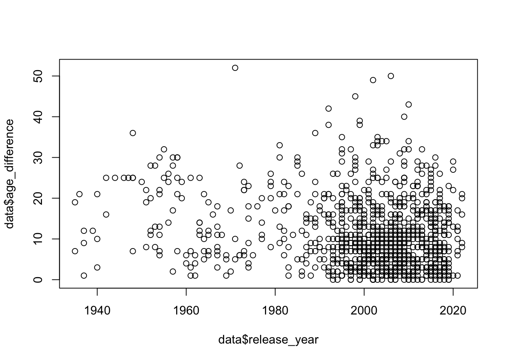

This week’s data was all about the age difference in years between Hollywood movie love interests. More information on the data can be found at the Hollywood Age Gap website via Data Is Plural.
Attaching package: 'lubridate'
The following objects are masked from 'package:base':
date, intersect, setdiff, union
library("cowplot")
Attaching package: 'cowplot'
The following object is masked from 'package:lubridate':
stamp
library("plotly")
Attaching package: 'plotly'
The following object is masked from 'package:ggplot2':
last_plot
The following object is masked from 'package:stats':
filter
The following object is masked from 'package:graphics':
layout
library("forcats")
Get the data
library(tidytuesdayR) #read in `tidytuesdayR`tuesdata <- tidytuesdayR::tt_load('2023-02-14') #load in readme and datasets for this week
--- Compiling #TidyTuesday Information for 2023-02-14 ----
--- There is 1 file available ---
--- Starting Download ---
Downloading file 1 of 1: `age_gaps.csv`
--- Download complete ---
tuesdata <- tidytuesdayR::tt_load(2023, week =7)
--- Compiling #TidyTuesday Information for 2023-02-14 ----
--- There is 1 file available ---
--- Starting Download ---
Downloading file 1 of 1: `age_gaps.csv`
--- Download complete ---
age_gaps <- tuesdata$age_gaps
Initial data exploration
Summary statistics for each variable
summary(age_gaps)
movie_name release_year director age_difference
Length:1155 Min. :1935 Length:1155 Min. : 0.00
Class :character 1st Qu.:1997 Class :character 1st Qu.: 4.00
Mode :character Median :2004 Mode :character Median : 8.00
Mean :2001 Mean :10.42
3rd Qu.:2012 3rd Qu.:15.00
Max. :2022 Max. :52.00
couple_number actor_1_name actor_2_name character_1_gender
Min. :1.000 Length:1155 Length:1155 Length:1155
1st Qu.:1.000 Class :character Class :character Class :character
Median :1.000 Mode :character Mode :character Mode :character
Mean :1.398
3rd Qu.:2.000
Max. :7.000
character_2_gender actor_1_birthdate actor_2_birthdate actor_1_age
Length:1155 Min. :1889-04-16 Min. :1906-10-06 Min. :18.00
Class :character 1st Qu.:1953-05-16 1st Qu.:1965-03-25 1st Qu.:33.00
Mode :character Median :1964-10-03 Median :1974-07-30 Median :39.00
Mean :1960-09-07 Mean :1971-01-29 Mean :40.64
3rd Qu.:1973-08-07 3rd Qu.:1982-04-07 3rd Qu.:47.00
Max. :1996-06-01 Max. :1996-11-11 Max. :81.00
actor_2_age
Min. :17.00
1st Qu.:25.00
Median :29.00
Mean :30.21
3rd Qu.:34.00
Max. :68.00
# A tibble: 6 × 13
movie_name relea…¹ direc…² age_d…³ coupl…⁴ actor…⁵ actor…⁶ chara…⁷ chara…⁸
<chr> <dbl> <chr> <dbl> <dbl> <chr> <chr> <chr> <chr>
1 Harold and Ma… 1971 Hal As… 52 1 Ruth G… Bud Co… woman man
2 Venus 2006 Roger … 50 1 Peter … Jodie … man woman
3 The Quiet Ame… 2002 Philli… 49 1 Michae… Do Thi… man woman
4 The Big Lebow… 1998 Joel C… 45 1 David … Tara R… man woman
5 Beginners 2010 Mike M… 43 1 Christ… Goran … man man
6 Poison Ivy 1992 Katt S… 42 1 Tom Sk… Drew B… man woman
# … with 4 more variables: actor_1_birthdate <date>, actor_2_birthdate <date>,
# actor_1_age <dbl>, actor_2_age <dbl>, and abbreviated variable names
# ¹release_year, ²director, ³age_difference, ⁴couple_number, ⁵actor_1_name,
# ⁶actor_2_name, ⁷character_1_gender, ⁸character_2_gender
Analysis ideas
Based on my initial exploration, I came up with a few ideas for potentially interesting research questions:
Are there trends in time when we look at age gap? For example, has the gap widened or narrowed over time?
How do the data look if we were to look at age gaps by director?
How do the age gaps look if we were to compare films where actor 1 (the older actor) was female versus films where actor 1 was male
Duplicating dataset
Before I do any manipulating, I will duplicate the original age_gaps dataset into a new dataset titled data.
data <- age_gaps
Trends in time
Let’s try and do a historical analysis of age differences based on the year each film was released.
plot(data$release_year, data$age_difference)

This is a bit difficult to discern any information or conclusions from, other than it appears that the number of movies produced each year has increased!
Let’s see if we can take an average of the age gaps for each year and create a better plot.
This first step will create a new data frame with each year and the average age gap for that year. Not all years are represented in the dataset of movies, so there are some years which do not appear in the table.
gap_byyear <- data %>%group_by(release_year) %>%summarise_at(vars(age_difference), list(year_meandiff = mean))gap_byyear